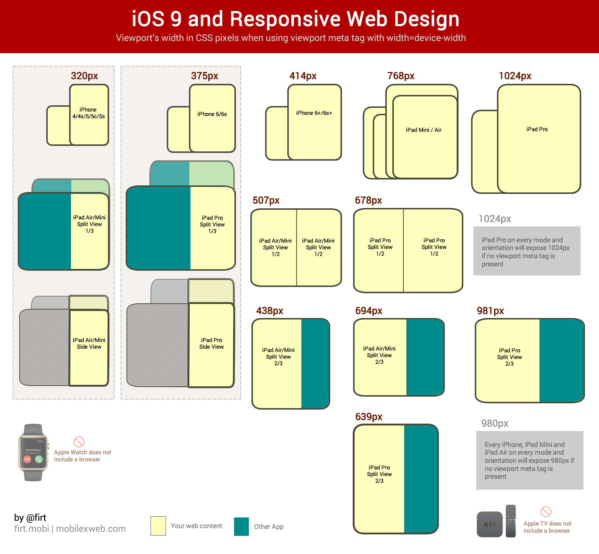

The Proper Response to iOS Safari Split View is Not a Bunch of Bean-Counting Pixel Math
Max Firtman’s post about iOS 9 Safari technical details contains a lot of stuff to get amped about, but let’s not get so geeked over details that we inadvertently restart a web design arms race.
- #tech
- #web
- #rwd
There’s a lot of tasty meat to Firt’s post about iOS 9 Safari tech deets and, correspondingly, there’s been a lot of chatter around the intertubes today. Interesting stuff, from CSS scroll snapping to broader ES6 takeup. Kudos to Max for pulling all of this stuff together—so much info!
But aren’t we all just a-quiver about the newly-unveiled “Split View” in Safari:
On newer iPads, you can upgrade Side View to Split View where two apps share the screen working simultaneously.
There are a bunch of geometric flavors of this: 1/3 of the screen, 1/2, 2/3. This has major implications for responsive design!, people shout.
Except it doesn’t, in my book.
There’s been a voyeuristic flocking to @firt’s (quite well-done) dimension porn image:

(Thanks to @firt for permission to use this image from his original post)
And then we fall into a trap: what media queries do I need to target all of those variants? What are the pixel dimensions of each viewport possibility? This changes everything! So much more work now!
Let’s reassess. Please.
This situation highlights the import of designing along a continuum, not along rigid particular breakpoints (with, what, windy, desolate, rocky, broken wilderness between them?). Let the content flow like water from a mobile- or content-first baseline design into the spaces of the viewport as it morphs. This sounds a little bit woo-woo, but I swear, in general, it works.
Thinking about proportions and shapes is fine. But when we try
to canonize a set of specific pixel-based media queries
(ever-expanding as viewport possibilities flourish) we’re
inadvertently committing ourselves to a kind of arms race that
hearkens back to User-Agent sniffing.
I don’t mean to understate the complexity of web design in our current device reality—yeah, it’s challenging. But it doesn’t have to be hard in this way. The number of adjustments I anticipate having to make to my site to make it look good in these new dimensions? Approximately zero. I’ve already tried to account for the continuum. (Disclaimer: I’m no designer. My version of “looks okay” across viewport sizes may not exactly be world-class.).
If there’s any fragmentation here with respect to responsive web design, we’re doing it to ourselves. Take a deep breath and let yourself free from the pixel bounds of each viewport out there…isn’t that a little better?
You may have noticed I don’t have any commenting enabled...yet. Hit me up @lyzadanger with thoughts; maybe I’ll add commenting soon.